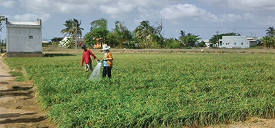
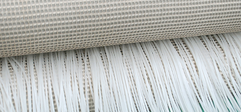
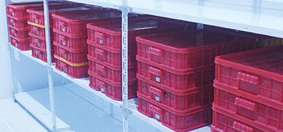
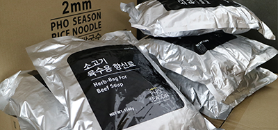

포지즌
PHO SEASON
2015년 포메인에서 설립한 베트남 현지 쌀국수 제조공장으로 베트남 메콩델타 지역에서 수확되는
맑고 투명한 햅쌀로 만든 쌀국수 면과 9가지 상급 천연 향신료를 사용한
육수용 허브백(Herb-Bags)을 생산하고 있습니다.
해외 쌀국수면 공산품에 의존해온 국내 쌀국수 시장에서 쌀국수 브랜드가 자체 기술개발로
쌀국수면을 생산한 것은 포메인이 유일합니다.
포시즌 설립에 따른 포메인의 차별화는 국내뿐 아니라 세계 쌀국수 시장의 새로운 기준이 될 것입니다.
쌀 한 톨부터 쌀국수 한 그릇까지
포메인에서는 묵은쌀과 전분 또는 밀가루를 혼합해 만든 기존 쌀국수면과는 전혀 다른
포메인 햅쌀 쌀국수면의 투명한 빛깔과 갓 지은 햅쌀밥 향을 느낄 수 있습니다.
또한 깊고 진한 천연 향신료의 향과 맛은 식재료가 중요해진 현대사회에 강력한 경쟁력이 됩니다.

1년 4계절, 햅쌀
쌀국수 건면 생산에 적합한 기후와 환경인 베트남,
특히 3모작이 가능한 메콩 델타지역에서 1년 내내 신선한 쌀을 공급받습니다.
포메인 쌀국수면은 묵은 쌀이 아닌 햅쌀만을 사용해 쌀국수 건면을 만듭니다.
티 없이 맑은, 정제수
포메인 쌀국수면 제조 과정에서 햅쌀만큼 중요한
물 또한 포시즌의 정제 기술을 통해 잔류 의약품과 환경호르몬 등
70여 가지의 오염 물질을 제거한 깨끗한 물(정제수)을 사용 합니다.

독자적 기술, 기계 건조
노후화된 타 쌀국수 공장과 달리 포메인이 자체 개발한 기계 건조 기술로
위생적인 건조가 이뤄집니다. 이 과정에서 하얗고 투명한 빛깔은 살리고
햅쌀밥의 향을 고스란히 담아냅니다.

면발의 완성, 저온 숙성
불필요한 화학 첨가물을 사용하지 않기 위해 저온으로 숙성 과정을 거칩니다.
적당한 찰기와 부드러움, 면발의 쫄깃함을 배로 끌어 올려 주는
포메인의 기술이 집약되어 있습니다.

명품 육수, 허브백
9가지 상급 천연 향신료를 사용한 육수용 허브백(Herb-Bags)은
지속적인 품질개선 재정비를 실시합니다.
포메인이 최상의 육수의 맛과 질을 유지하는 비결입니다.